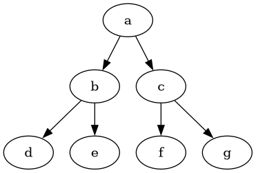

Orientované grafy #
Graphviz #
Graphviz (skratka od Graph Visualization Software) je open-source program pre vizualizáciu diagramov založených na orientovaných grafoch zadaných pomocou grafického jazyka DOT. Vývoj programu začal v roku 1991 v AT&T Laboratories, Inc. a do súčasnej doby bol integrovaný do množstva aplikácií a projektov.
![/* courtesy Ian Darwin and Geoff Collyer, Softquad Inc. */
digraph unix {
size = 7;
fontname="Helvetica,Arial,sans-serif"
node [fontname="Helvetica,Arial,sans-serif"]
edge [fontname="Helvetica,Arial,sans-serif"]
node [color=lightblue2, style=filled];
"5th Edition" -> "6th Edition";
"5th Edition" -> "PWB 1.0";
"6th Edition" -> "LSX";
"6th Edition" -> "1 BSD";
"6th Edition" -> "Mini Unix";
"6th Edition" -> "Wollongong";
"6th Edition" -> "Interdata";
"Interdata" -> "Unix/TS 3.0";
"Interdata" -> "PWB 2.0";
"Interdata" -> "7th Edition";
"7th Edition" -> "8th Edition";
"7th Edition" -> "32V";
"7th Edition" -> "V7M";
"7th Edition" -> "Ultrix-11";
"7th Edition" -> "Xenix";
"7th Edition" -> "UniPlus+";
"V7M" -> "Ultrix-11";
"8th Edition" -> "9th Edition";
"1 BSD" -> "2 BSD";
"2 BSD" -> "2.8 BSD";
"2.8 BSD" -> "Ultrix-11";
"2.8 BSD" -> "2.9 BSD";
"32V" -> "3 BSD";
"3 BSD" -> "4 BSD";
"4 BSD" -> "4.1 BSD";
"4.1 BSD" -> "4.2 BSD";
"4.1 BSD" -> "2.8 BSD";
"4.1 BSD" -> "8th Edition";
"4.2 BSD" -> "4.3 BSD";
"4.2 BSD" -> "Ultrix-32";
"PWB 1.0" -> "PWB 1.2";
"PWB 1.0" -> "USG 1.0";
"PWB 1.2" -> "PWB 2.0";
"USG 1.0" -> "CB Unix 1";
"USG 1.0" -> "USG 2.0";
"CB Unix 1" -> "CB Unix 2";
"CB Unix 2" -> "CB Unix 3";
"CB Unix 3" -> "Unix/TS++";
"CB Unix 3" -> "PDP-11 Sys V";
"USG 2.0" -> "USG 3.0";
"USG 3.0" -> "Unix/TS 3.0";
"PWB 2.0" -> "Unix/TS 3.0";
"Unix/TS 1.0" -> "Unix/TS 3.0";
"Unix/TS 3.0" -> "TS 4.0";
"Unix/TS++" -> "TS 4.0";
"CB Unix 3" -> "TS 4.0";
"TS 4.0" -> "System V.0";
"System V.0" -> "System V.2";
"System V.2" -> "System V.3";
}](_images/graphviz-1b7c89abaa86632df1f6ce13ae83a51072b3b303.png)
Obr. 16 Orientovaný graf, zdrojový kód#
Inštalácia
Program je súčasťou štandardných repozitárov.
sudo apt install graphviz
Konfigurácia
Rozhranie k programu je súčasťou distribúcie platformy Sphinx. Integrácia programu do platformy Sphinx je v súbore config.py zaradením do zoznamu extensions:
extensions = [
...
"sphinx.ext.graphviz"
...
]
{graphviz} #
Atribúty direktívy {graphviz} sú v popísané v dokumentácii. Velkosť grafu určená parametrom size v zdrojovom texte grafu.
```{graphviz}
:alt: string - alternatívny text
:layout: string - format grafu - dot, neato, circo ...
:name: string - referencia
:align: position - poloha diagramu center, left, right
zdrojovy text grafu
```
Príklad: Jednoduchý diagram
```{graphviz}
:caption: Jednoduchý orientovaný graf
:align: center
digraph test {
a -> b;
a -> c;
b -> d;
b -> e;
c -> f;
c -> g;
}
```

Obr. 17 Jednoduchý orientovaný graf#
Príklad: Diagram farieb
```{graphviz}
:caption: Diagram farieb
:align: center
digraph Farby {
label = " "
labelloc = "b"
layout = neato
size = 4.5
fontname = Arial
node [
shape = ellipse
width = 1
color="#00000088"
style = filled
fontname="Helvetica,Arial,sans-serif"
]
edge [len = 1.75 penwidth = 2.5 arrowhead=open]
start = regular
normalize = 0
green [fillcolor = green fontcolor = white]
white [fillcolor = white ]
blue [fillcolor = blue fontcolor = white]
red [fillcolor = red fontcolor = white]
yellow [fillcolor = yellow ]
cyan [fillcolor = cyan ]
magenta [fillcolor = magenta fontcolor = white]
deepskyblue [fillcolor = deepskyblue]
orange [fillcolor = orange ]
yellowgreen [fillcolor = yellowgreen]
deeppink [fillcolor = deeppink fontcolor = white]
purple [fillcolor = purple fontcolor = white]
springgreen [fillcolor = springgreen]
green -> {white yellow cyan yellowgreen springgreen} [color = green ]
red -> {white yellow magenta orange deeppink } [color = red ]
yellow -> {orange yellowgreen} [color = yellow ]
blue -> {white cyan magenta deepskyblue purple} [color = blue ]
cyan -> {springgreen deepskyblue} [color = cyan ]
magenta -> {deeppink purple} [color = magenta]
}
```
Obr. 18 Diagram farieb#
Doplnky #
Lokálne použitie #
Pre kreslenie grafov mimo platformy Sphinx vyvoríme v textovom editore zdrojový kód grafu. Spustením prekladača v konzole vygenerujeme grafu do zvoleného formátu (parameter T):
dot -Tpng input_file.txt -o output_file.png
Dokumentácia a rozšírenia#
Domáca stránka, dokumentácia, syntax
Sphinx Integrácia
Galérie príkladov
Online editory